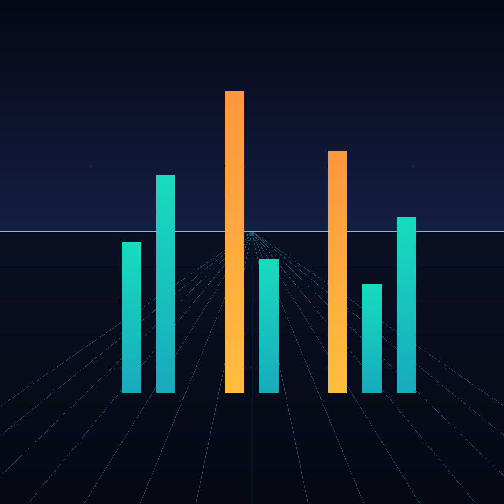
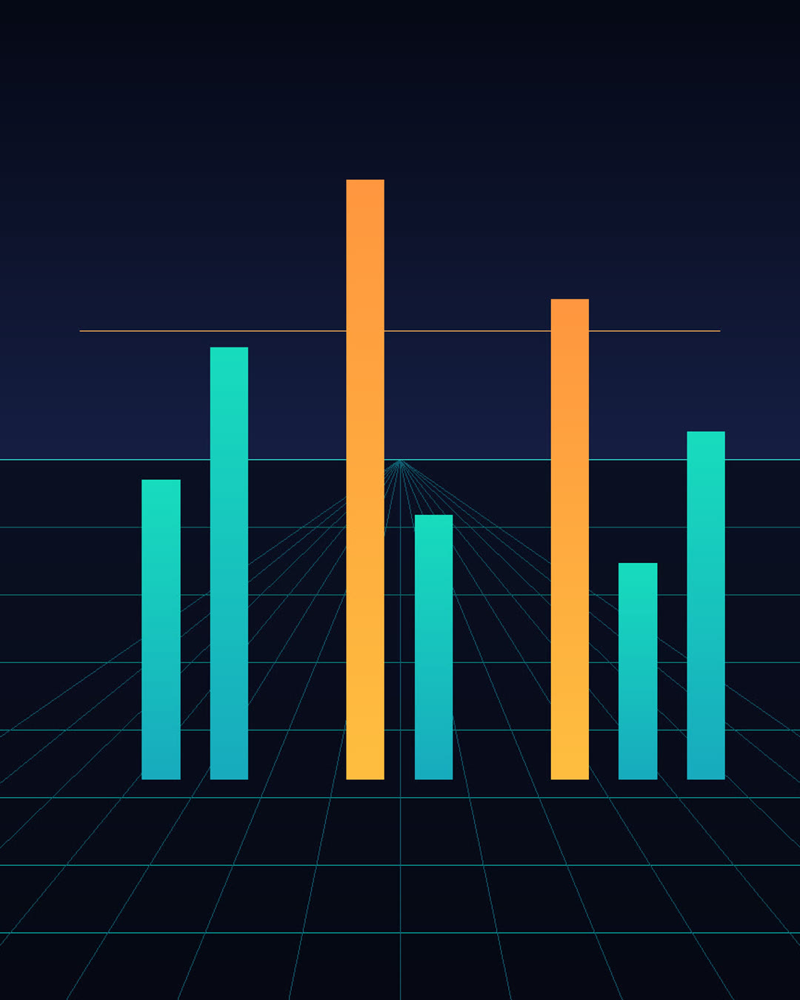
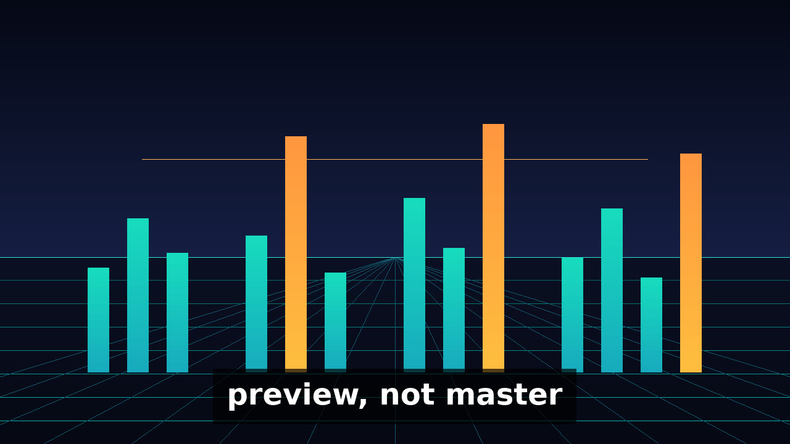

- File
- Pixels
- Bytes
- Use
Portrait cut
The tall frame is a window, not a new painting.
The square is 1080 by 1080. The portrait keeps a centered 864-pixel-wide slice, the full 1080 height, then scales that slice to 1080 by 1350. The marked window is that slice.

to

Poster
Same picture. One line added.
The poster is the hero. The only added mark is the line preview, not master, drawn along the bottom. The typeface is DejaVu Sans Bold from the build machine. It is not shipped in the pack.


Film
The recording sits under the stills.
Picture from the hero plate, with preview, not master on the image and in the captions. Audio is the preview MP3 re-encoded as AAC, so the film is 19.200 seconds and the MP3 is 19.200 seconds. preview, not a master.
Recorded reading
The MP3 is the source. The film follows it.
preview/preview.mp3 · 19.200 seconds · preview, not a master.
No human listening audition was performed for this build.